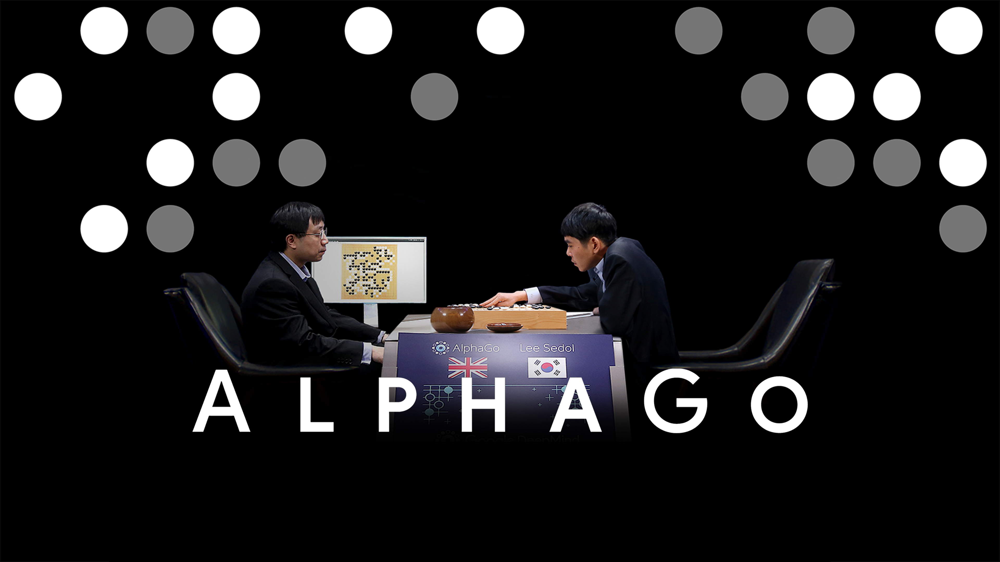
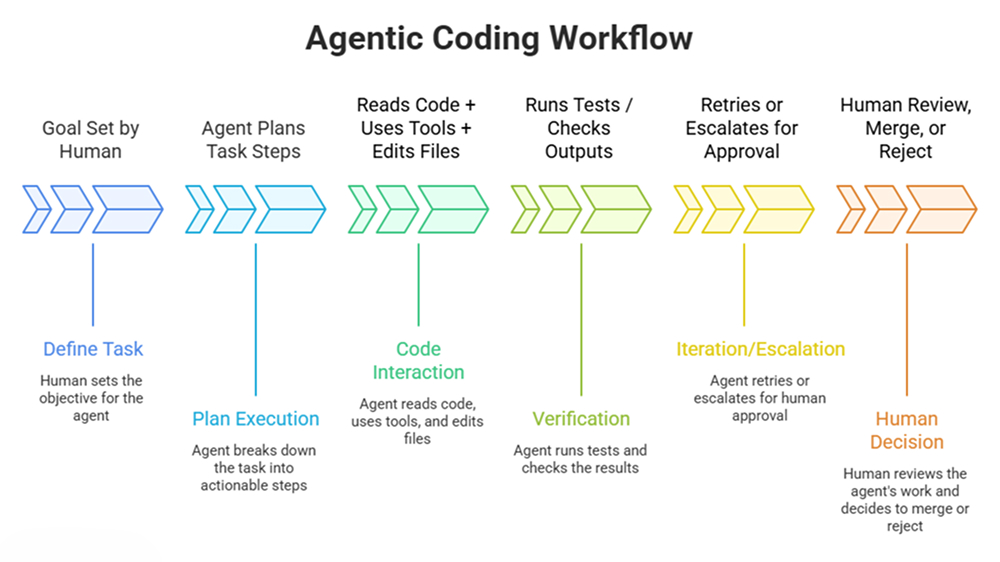

Week 3 · Semester 1
Move 37 & My First Agent
My lecturer pointed me toward the AlphaGo documentary as a framework for understanding what it actually means to negotiate with a machine.

AlphaGo and Move 37
What fascinated me about AlphaGo was its underlying architecture—a system trained through reinforcement learning and self-play. DeepMind's CEO described it as "a magical piece that can extend the power of your mind," raising an interesting question: how does a tool stretch our cognitive boundary without completely replacing human intent?
The game of Go relies on minimal rules—a grid, two colors, and territorial control—yet its move combinations create a near-infinite probability space. In Game 2 against Lee Sedol, AlphaGo executed Move 37—a low shoulder hit on the 5th line that human experts initially dismissed as a blunder because it violated centuries of opening theory, only to realize later that it reshaped the entire board strategy.

Credit: Image by David Silver et al., AlphaGo Paper [1]
Research Relevance
Move 37 connects directly to my Pillar 2 argument: a collaborator needs deep grounding, but not so much that it flattens into an average, to produce transformational rather than merely exploratory creativity. AlphaGo was grounded in millions of iterations, yet because it was trained against itself rather than purely copying human historical games, it produced a move outside established human conventions.
Challenges Faced
I felt lost regarding the broader design context this week. I had always assumed "Interaction Design" was strictly confined to visual interfaces (UI/UX). Exploring Human-Computer Interaction (HCI) literature shifted my perspective: the mechanism of how we interact with an object or system is itself curated. Designing that interactive exchange—the parameters, boundaries, and feedback—is an act of design in its own right.
What I now think
On Machine Creativity: I used to think AI could only function within the exact limits we give it. Seeing reinforcement learning in AlphaGo showed me how an agent can generate transformational outcomes by discovering moves no human taught it to look for.
On Interaction Design: I used to view interaction design merely as building screens or physical installations. Now I realize that curating the dialogue and process between user and system is the real medium.
Moving Forward
This left me more curious about the different types of AI algorithms that exist — what the differences are, how we're using them, and what the best way is to use one if the goal is to spark creativity.
Building My First Agent
To understand agentic workflows in creative coding firsthand, I built a baseline AI agent.

Credit: Milestone AI
Rather than just answering prompts, an agentic system follows a goal-driven loop:
Workflow: Plain-English instruction files defining objectives, constraints, and rules.
The Agent: Evaluates inputs, decides next steps, and executes logic autonomously.
Tools: Function calls that allow the system to read context, run terminal commands, or search external data.
Reflection
Building the agent was a pure exercise in self-directed learning. I wasn't applying it to a studio project yet; I just wanted to deconstruct the architecture. Understanding the difference between a static prompt-response loop and an agentic workflow gives me a clearer technical mental model for how machine autonomy is constructed.